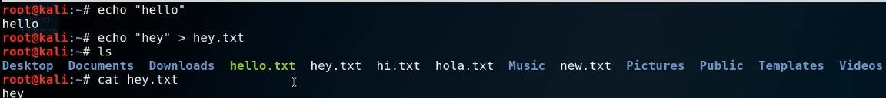

create a new file with content
echo "hey" > hey.txt

concatenating
create a new empty file
touch newfile.txt
write some content in the file and save it
another way of editing a file is by using the graphic user interface: gedit
gedit newfile.txt